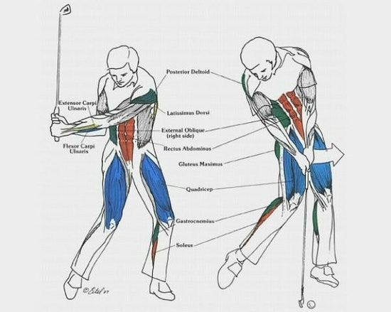

Ask AI:
The word ``moment’’ has meanings that span
a moment in time…
describes the time between an event and another. As in: ``Let’s take a moment to remember the founder of the Republic of Turkey.’’
There are various ways to take the moment of a geometric entity about another, e.g. the moment of area about a line.
The moment of a force, \(\boldsymbol{M}\), also known as torque, is a physical abstraction associated with the tendency of the force \(\boldsymbol{F}\) to produce rotation around itself.
The cross (vector) product is a vector operation. It is different from the dot (scalar) product.

Ask AI:
By the end of this lecture students should be able to: